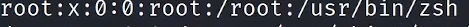

kali@kail ~
1)username
2)machine name
3)home folder of user:eg home foler of user kali will be named kali
suppose we are logged in as root so ~ will be root folder
#pwd: print working directory
#cd:change directory
#cd .. : go 1 folder back
/ : base folder or the root of the file system
linux file system is like a tree and / is the root of that tree
#ctrl + l :clear screen
l#s:list
#mkdir x:make directory named x
#rmdir x:remove directory named x
#ls -la:long listing all (also prints file name that may not be visible when using ls cmd)
-l:long listing
-a:all
**********website :explain shell :used to know what cmd does what***************8
#man ls:manual of ls
OR
#ls --help
#echo 'Hi!'
prints Hi
#echo 'Hi' > test.txt:echo into a file and when we run :cat text.txt o/p is Hi
#cp:copy
eg: cp test.txt Downloads: cp text.txt to downloads folder
#rm fileName: to remove file
#mv :move
eg: mv text.txt Downloads: move text.txt to Downloads folder
l#ocate test.txt
wont get o/p of downloads folder coz we just updated it
to see it run cmd
#updatedb
then again do : #locate text.txt: now it will show
#passwd:change password
1)rwx:owner permissions
2)rwx:group permissions
3)rwx:all other users permissions
#chmod:change mode
#chmod +rwx(+r , +w ,+x) fileName
OR
#chmod 777 fileName
read:4
write:2
execute:1
#sudo adduser newUserUsername: to add new user
#whoami:logged in as which user

root:name of user
0:userID
/usr/bin/zsh:shell type:zsh

user:john
userID:1001
shell type:bash
#cat /etc/passwd:list of users,type of services running on the machine
#cat /etc/shadow:contains password hashes
#su userName: switch User to given userName
#cat /etc/sudoers: who has what privilages
#cat /etc/group:who has what privilages

kali has sudo privilage
#cat /etc/group|grep sudo

jeetu855 has sudo privilage
-----------------Networking Commands----------------------
#ip a OR #ifconfig: only shows ethernet or hardwired connections
for wireless connections
#iwconfig
#ip n OR arp a
n:neighbour
#ip r OR route: routing table
r:route
#ping ipAddrss:check whether machine is online or not
uses ICMP(Internet control message protocol) sometimes is disabled on some machines
#echo "Hi" > hey.txt
#cat hey.txt :o/p= Hi
to append to this file
#echo "Hi again ">>hey.txt
#cat hey.txt:o/p Hi
to overwrite the file
#echo 'Hi'>hey.txt
#cat hey.txt: o/p=Hi
to create new file
#touch newFileName
----------Starting and Stopping Service--------------------
service ServiceName start/stop/restart
Start a server using python
#python3 -m http.server 80
-m:use module
http.server:name of module
80:port number(You canuse any portnumber you want)
To make a service automatically start on system start
#systemctl enable serviceName
to disable service on start
#systemctl disable serviceName
--------------Updating Installing -----------------------
#sudo apt update && apt upgrade
to install:
#sudo apt-get install packageName
to remove
#sudo apt-get remove packageName
to remove all the files of package
#sudo apt pruge packageName
#git clone httpsLink: clone in the opt older(prefarably not necessary)
---------------Bash Scripting-----------------------------------
#ping 192.168.29.117 -c 1

send 1 packet only
-c:count
#ping 192.168.57.4 -c 1 >ip.txt
send o/p of ping command to a file called ip.txt
if want to grep multiple words need to use " "
#grep "64 bytes" :use " " to grep multiple words
#ping 192.168.29.117 -c 1| grep "64 bytes" | cut -d " " -f 4

-d:delimiter:here it is going to be space
-f:select specific field: in this case field number 4 which is the ip address
#ping 192.168.29.117 -c 1| grep "64 bytes" | cut -d " " -f 4|tr -d ":"

tr:translate
-d:delimiter:here we are removing the colon